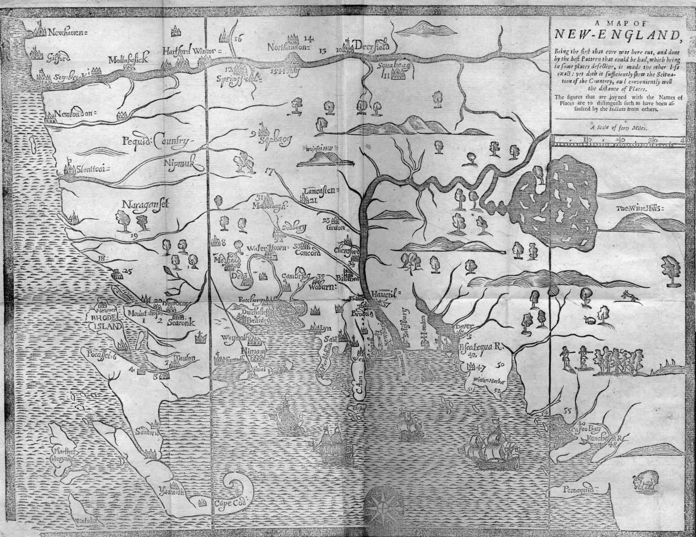

Directions: Study the map and the background, then answer the questions.

Background. The map shows the New England built by 1677: Plymouth founded in 1620 under the Mayflower Compact, Massachusetts Bay from 1630 under Winthrop's covenant, Connecticut organized in 1639 under the Fundamental Orders. The generation that printed it banished Roger Williams and Anne Hutchinson, burned the Pequot fort at Mystic, and fought King Philip's War.
1. The map is dated 1677 and was drawn to accompany an account of a war. Name the war, name the coalition's leader and his father, and state the cause the lesson gives for the coalition's decision to fight.
2. State the Plymouth facts in order: the year, the problem the colonists faced on landing, the document they signed before going ashore, and the number of men who signed it.
3. Two dissenters, two outcomes. For Roger Williams, state his two teachings and the place he founded. For Anne Hutchinson, state her teaching, the year of her trial, and her own opening demand to the court.
4. Put Connecticut and Salem in sequence. Give the year of the Fundamental Orders and the body that held the supreme power under them. Then name the kind of evidence admitted at Salem in 1692 and the final count of the dead there.
1. Name the war, the leader and his father, and the cause. The war is King Philip's War of 1675 and 1676, the subject of William Hubbard's Narrative, for which John Foster cut the map in 1677. The coalition's leader was Metacom, called King Philip by the English, the son of Massasoit, the Wampanoag sachem who had allied with Plymouth at its founding. The lesson gives the cause as fifty years of land loss: English settlement taking Wampanoag and neighboring land until Metacom built a coalition of Wampanoag, Narragansett, Nipmuc, and other peoples to strike back. (Blueprint 8)
2. State the Plymouth facts in order. In November 1620 the Mayflower anchored off Cape Cod, north of the Virginia territory its patent covered, so some passengers argued no authority bound them. Before going ashore, the men signed the Mayflower Compact, creating a civil Body Politick by consent and promising obedience to the just and equal laws it would make. Forty-one men signed. (Blueprint 7)
3. Two dissenters, two outcomes. Roger Williams taught that the king had no right to grant Indigenous land he did not own, and that government could not compel worship. Banished in 1636, he bought land from the Narragansett sachems and founded Providence in Rhode Island on religious toleration. Anne Hutchinson taught that salvation came by God's grace directly, by faith alone, and not through works, and that most of the colony's ministers preached a covenant of works. Tried in 1637, she opened by demanding her charges: "I am called here to answer before you but I hear no things laid to my charge." She was banished. (Blueprint 8)
4. Give the Connecticut facts, then the Salem evidence and count. The Fundamental Orders were adopted in 1639 by the freemen of Windsor, Hartford, and Wethersfield, and they placed the supreme power of the Commonwealth in the General Court. At Salem in 1692 the court admitted spectral evidence, testimony that an accused person's spirit had tormented a victim in a form only the victim could see. Nineteen people were hanged and one man, Giles Corey, was pressed to death, twenty dead in all, before the court was ended and the colony repented. (Blueprint 7, 8)
Teacher note. This check is formative. Questions 2 and 4 carry blueprint entry 7 and test the founding documents in sequence, compact then Orders, with their exact mechanisms, consent and the General Court's supreme power. Questions 1 and 3 carry blueprint entry 8 and separate students who can state why Metacom fought, as a decision with reasons, from students who hold the wars as weather. A student who cannot produce Hutchinson's opening demand has not yet read the trial record closely enough for the activity.